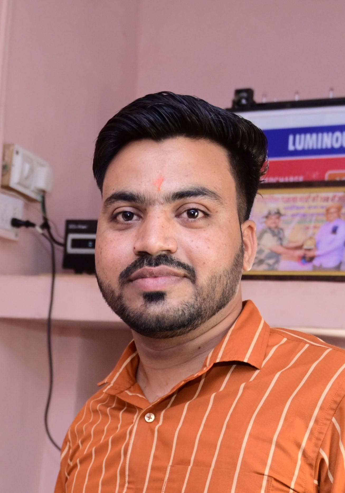

Ashok Kumar

OBJECTIVE:-
To succeed in an environment of growth and excellence which provide me job satisfaction
and self-development and help me achieve personal as well as organizational goals.
SYNOPSIS
- Knowledge of programming language Core JAVA, Spring core, Spring MVC, Spring Boot, JDBC, HTML, and CSS.
- Good knowledge in OOPs concepts, Exception Handling, Multi-threading, Collection Framework data structure like SET, LIST, MAP.
- Knowledge of SQL: constraints, Schemas, writing JOINs, good in subqueries, Normalization etc.
- Worked on web technologies like HTML, CSS.
- Good knowledge in spring core concept and loose coupling, spring MVC flow and design.
- effective communicator with strong interpersonal, co-ordination and analytical skills.
- A quick learner having adaptability to situation, focus on goals and value addition.
- Honest and hard working in both individual and team player aspects.
- Open to learn new technologies.
ACADAMIC QUALIFICATION:-
- 12th
- completed in 2015 from RBSE Board with 81.80%
- 10th
- completed in 2013 from RBSE Board with 69.17%
- B.Tech
- completed in 2020 from Govt. Engineering College, Jhalawar which is affiliated with Rajasthan Technical University Kota
contact me